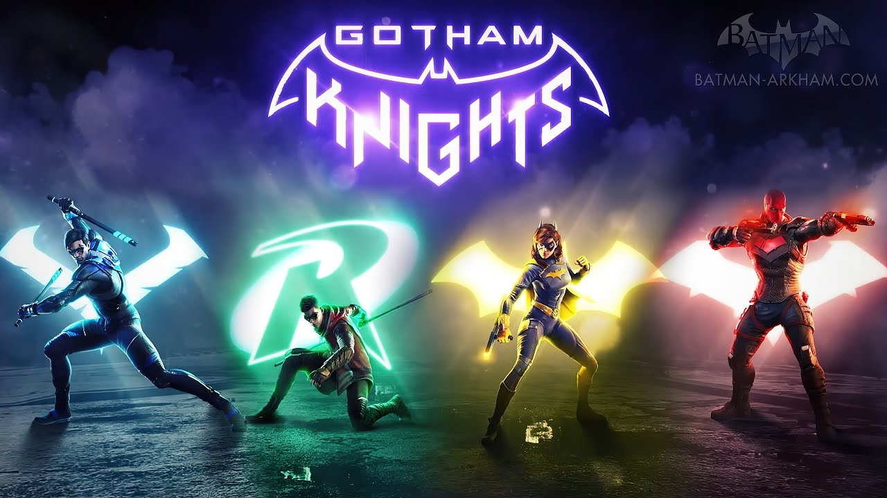

Gotham Knights

Gotham Knights had a huge buzz already before it's release date for many reasons. Gamers everywhere were so excited to embark on an adventure throughout Gotham City without Batman being the central character. Some of that excitement started to dwindle when some players felt as if the game wouldn't be good due to crucial details coming out right before the release date. The two big details were the combat system not being anything similar to the Batman Arkham games and the game only running at 30fps. Gaming blogs and news outlets everywhere started to dump on it without playing it but after release a lot of the criticism was taken back once players realized Gotham Knights was a beautiful experience with a beautiful story. What do you think? Was it fair to judge the game based off of two details given before playing it?